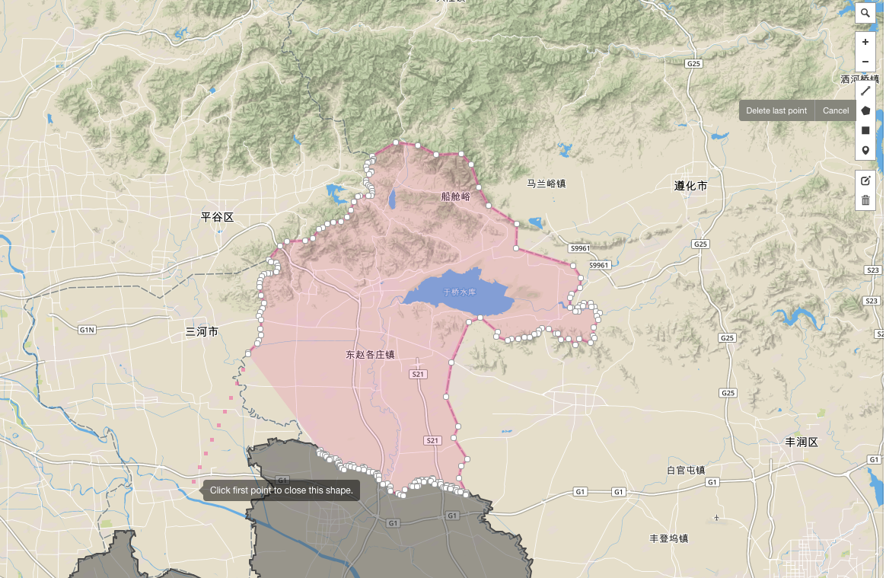
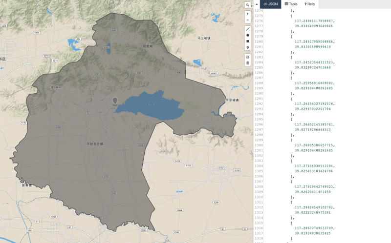

Create new geo shape and append it
Take Tianjin city as an example. Jizhou district was merged into Tianjin city in June, 2016. Hence, echarts-maps needs to update Tianjin map.
Tutorial
- Please download Tianjin map and save as:
tianjin.geojson -
Open geojson.io in your browser. Drag and drop
tianjin.geojsoninto it:
-
Draw Jizhou district using Polygon tool:
Please remember that to close the polygon, you need to click the first point 
-
After the polygon is complete, the helping shapes disappears but the polygon. Please save the right hand side geojson as：jizhouqu.geojson

-
It is time to use echarts-mapmaker.
$ npm install -g echarts-mapmaker $ merge tianjin.geojson jizhouqu.geojson $ ls merged_tianjin.geojson -
merged_tianjin.geojsonis then the final geojson
Make a js file
This needs echarts-mapmaker.
$ makejs tianjin.geojson tianjin.js 天津
Please note that the last name is a map registry name so you will need to use the same name inside echarts.